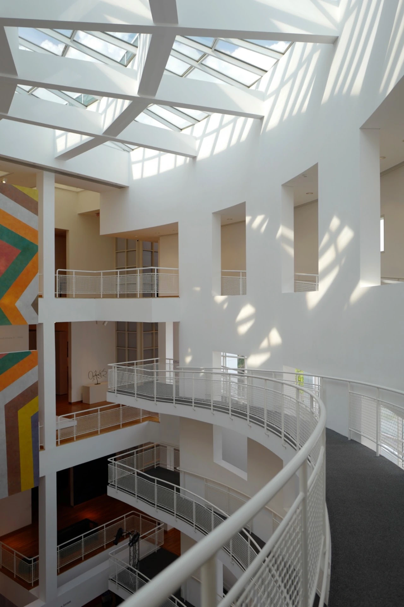
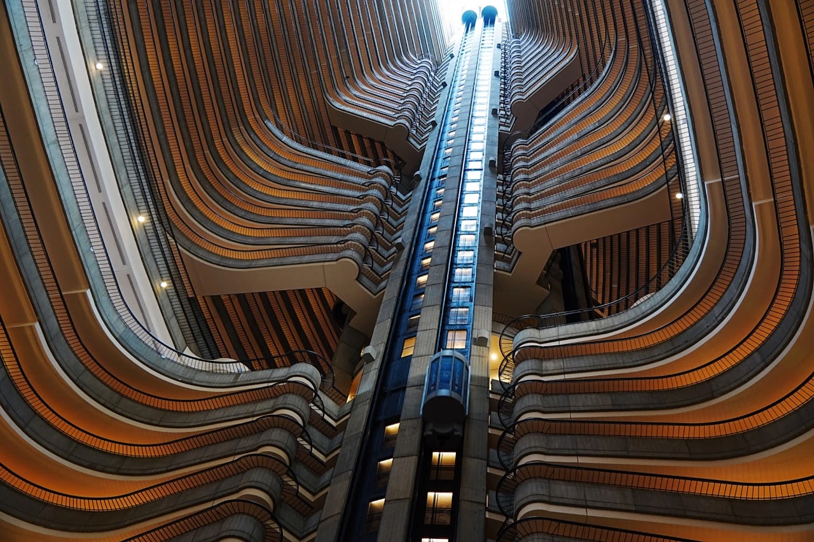
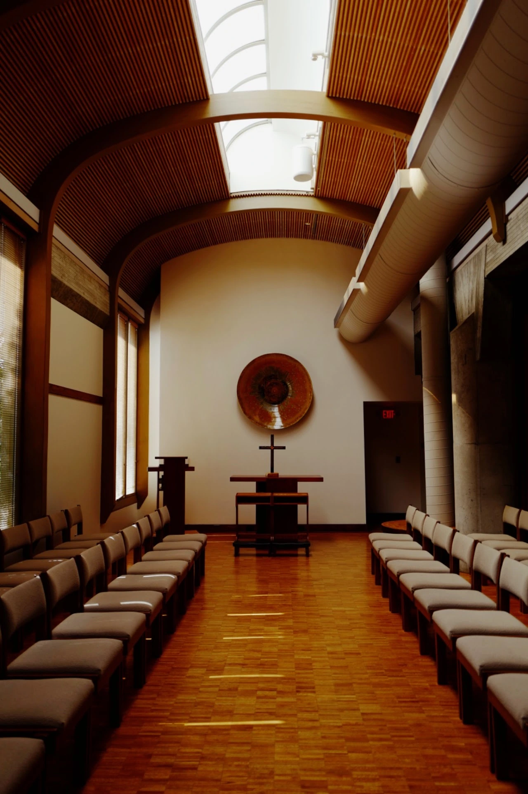
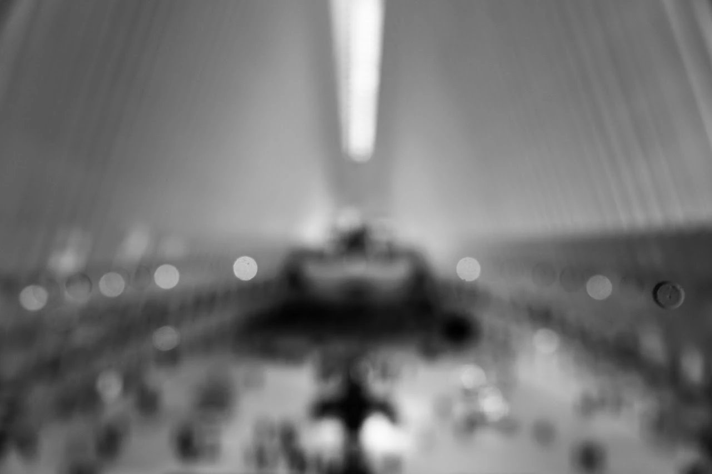
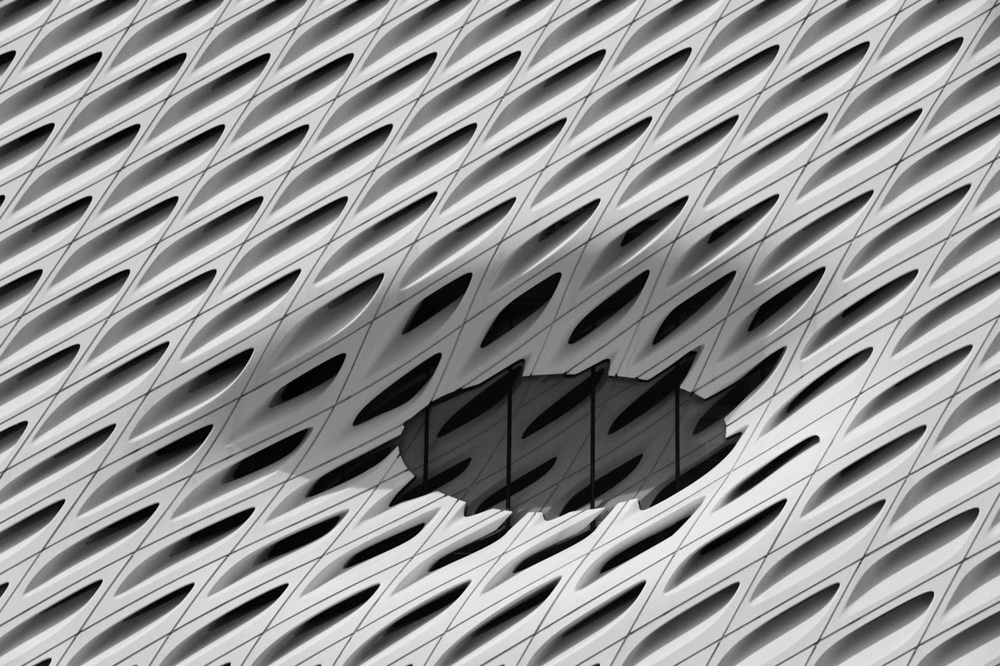

Photography series
Cathedrals of Light

Cover unavailable. Open the project to continue.
High Museum of Art
Atlanta Marriott Marquis
Hyatt Regency Atlanta


Image unavailable. Open the original photograph. Image unavailable. Open the original photograph.
Image unavailable. Open the original photograph.

Image unavailable. Open the original photograph. Image unavailable. Open the original photograph.
Image unavailable. Open the original photograph.Cannon Chapel at Emory University


Image unavailable. Open the original photograph.The Oculus


Image unavailable. Open the original photograph.The Broad


Phoenix Center, Beijing